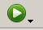
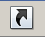

Los usuarios pueden ejecutar aplicaciones Java Web Start de las formas siguientes:
Puede ejecutar una aplicación Java Web Start desde un navegador pulsando un enlace al fichero JNLP de la aplicación. El texto siguiente es un ejemplo de un enlace a un fichero JNLP.
<a href="/alguna/ruta/Notepad.jnlp">Lanza Aplicación Bloc de Notas</a>
El software de Java Web Start carga y ejecuta la aplicación basado en las instrucciones en el fichero JNLP.
Inténtelo ahora: Ejecutar Bloc de Notas
Si está usando al menos la Plataforma Java, Edición Estándar 6 o posterior, puede ejecutar una aplicación Java Web Start a través del Visor de Cache de Java.
Cuando el software de Java Web Start carga primero una aplicación, la información del fichero JNLP de la aplicación es almacenada en el Visor Local de Cache de Java. Para lanzar la aplicación de nuevo, no necesita volver a la página web donde usted la lanzó primero; puede lanzarla desde el Visor de Cache de Java.
Para abrir el Visor de Cache de Java:
La aplicación es listada en la pantalla del Visor de Cache de Java.
Para ejecutar la aplicación, seleccionela y pulse el botón Ejecutar, , o haga doble click sobre la aplicación. La aplicación se inicia tal como lo hizo desde la página web.
Puede agregar un acceso directo al escritorio a una aplicación Java Web Start. Seleccione la aplicación en el Visor de Cache de Java. Haga click con el botón derecho del ratón y seleccione Instalar Accesos Directos o pulse el botón Instalar, .
Un acceso directo es agregado al escritorio.
Puede entonces lanzar la aplicación Java Web Start como si lanzara cualquier aplicación nativa.